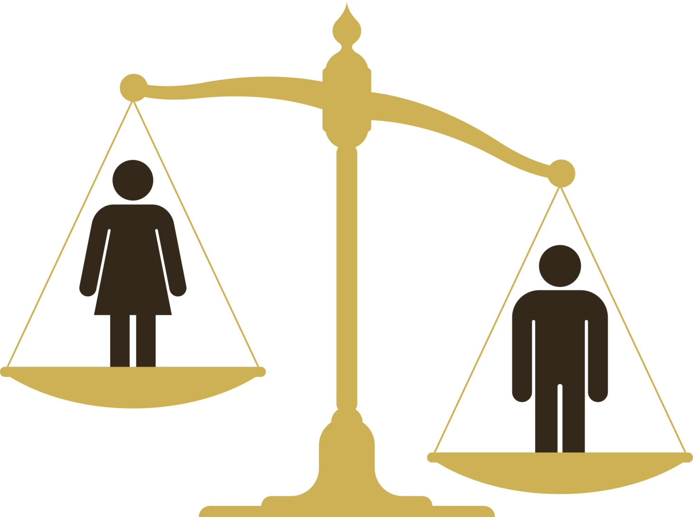
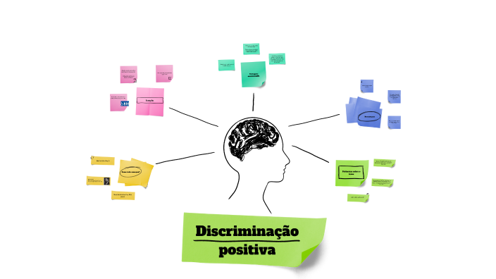
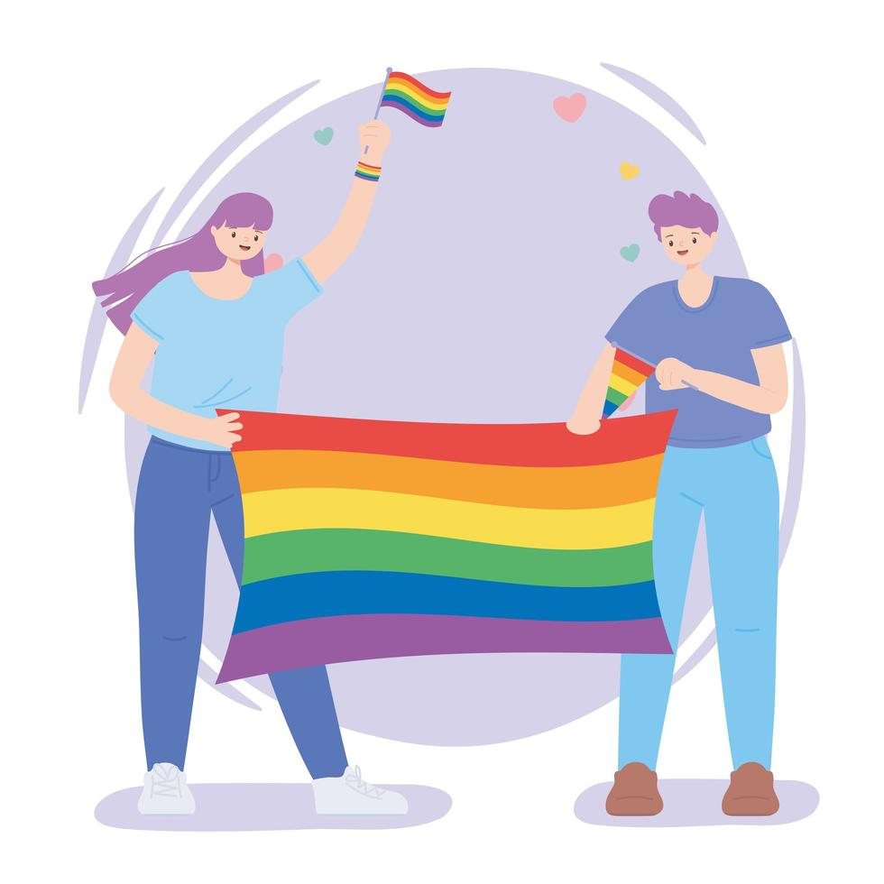
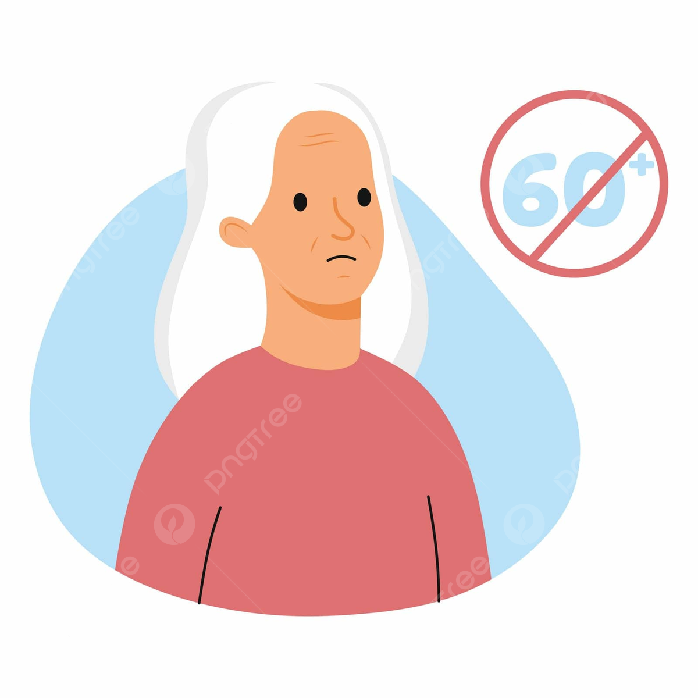
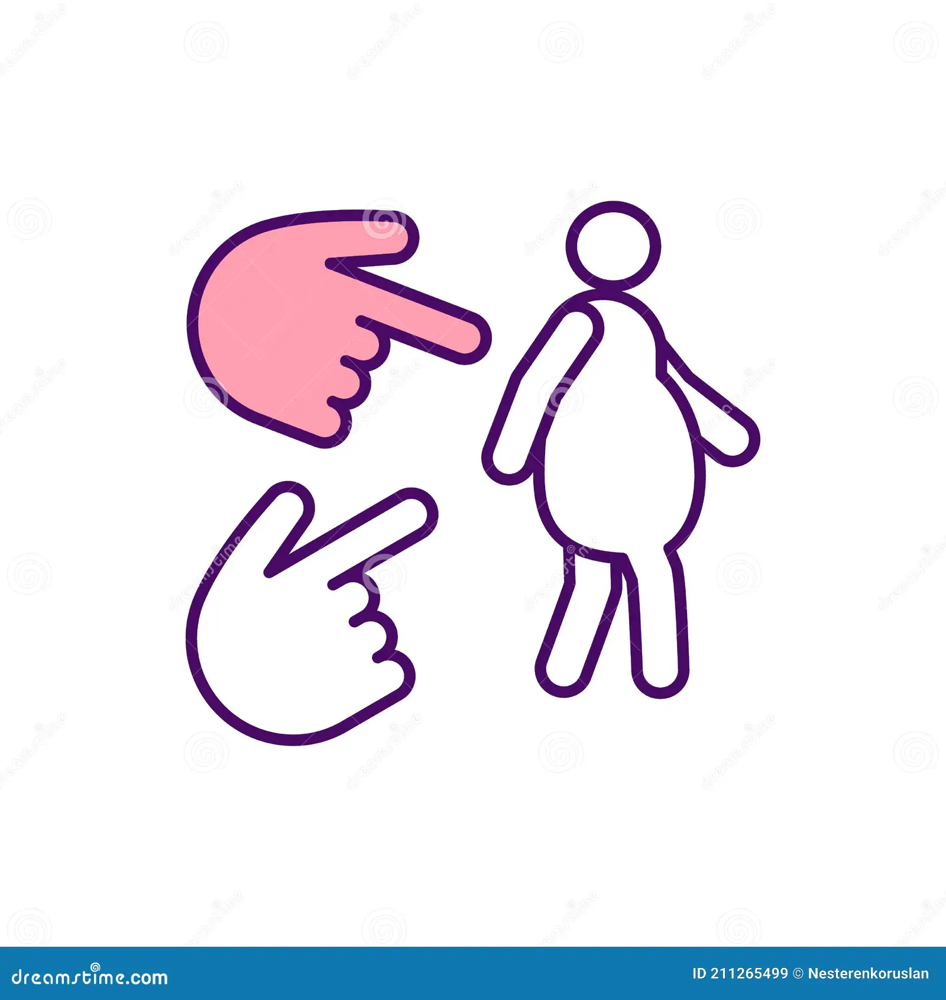
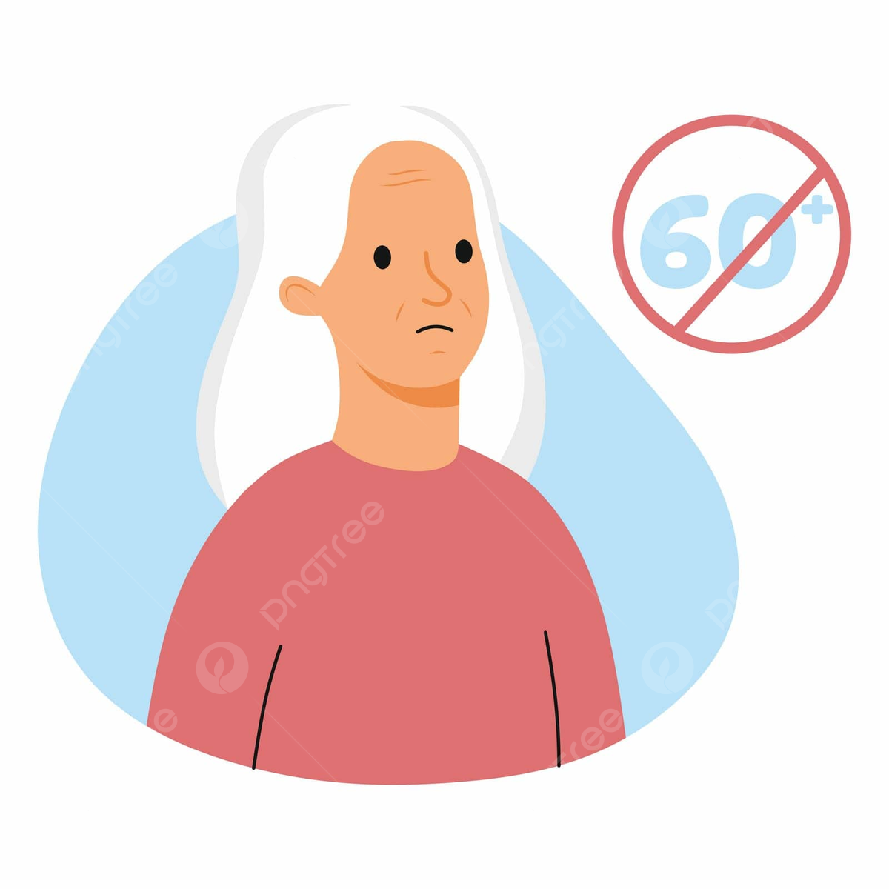
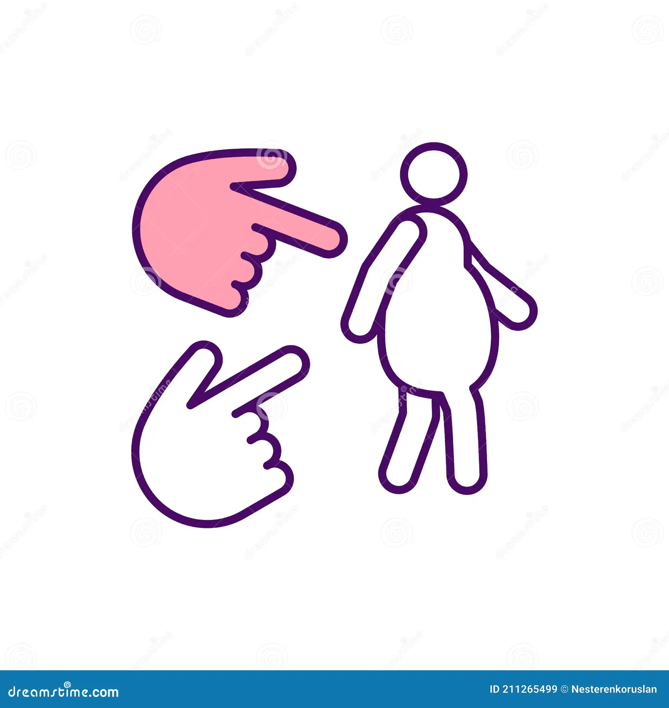
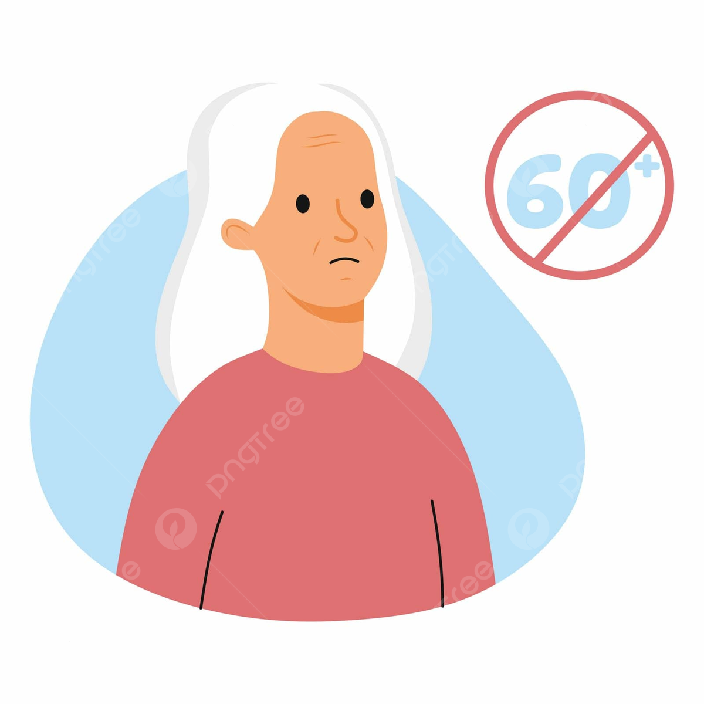
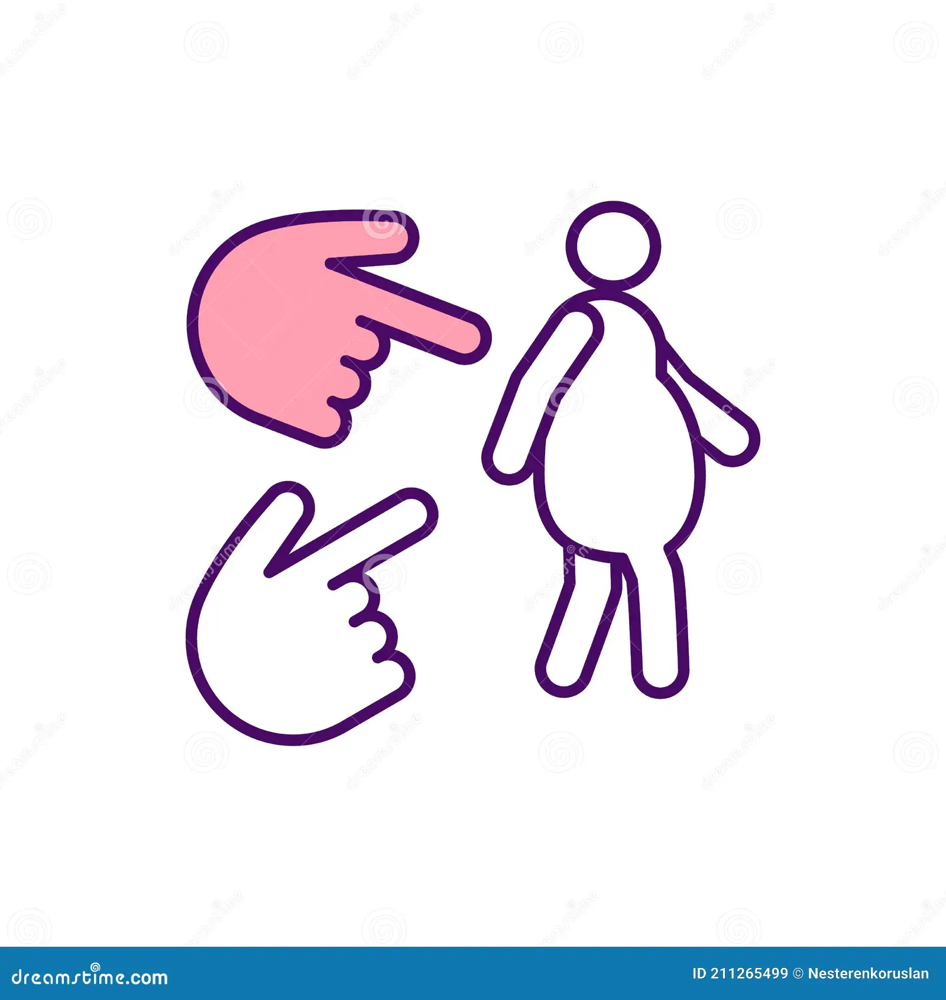

Outros tipos de discriminação
   



O 3 de julho marca o Dia Nacional de Combate à Discriminação Racial. A data faz alusão à aprovação da primeira legislação contra o racismo no Brasil, em 3 de julho de 1951. Trata-se da Lei 1.390, que incluiu, entre as contravenções penais, a prática de atos resultantes de preconceitos de raça e cor. A discriminação racial corresponde a toda distinção, exclusão, restrição ou preferência baseada em raça, cor, descendência ou origem nacional ou étnica. Ocorre que, nem sempre, a discriminação é algo evidente ou um ato isolado. Ela está presente no dia a dia, como produto de uma construção social e cultural histórica: é o que se chama de racismo estrutural. Este se perpetua com a reprodução cotidiana de discursos e práticas, mesmo que isso ocorra de forma inconsciente.
A Justiça do Trabalho tem sido acionada em casos de discriminação racial no ambiente de trabalho. Se provada ou admitida a conduta, pode determinar ao empregador a reparação do dano ao trabalhador com multas ou sanções ao empregador, que deve coibir a prática. Em 2020, por exemplo, a Segunda Turma do Tribunal Superior do Trabalho considerou que a falta de diversidade racial em um guia de padronização visual de uma rede de laboratórios configurava-se discriminação, ainda que indireta. A Turma entendeu que a publicação, ao deixar de contemplar pessoas negras, gerou efeito negativo sobre o quadro de pessoal e feriu o princípio da igualdade. “Toda a forma de discriminação deve ser combatida, notadamente aquela mais sutil de ser detectada em sua natureza, como a discriminação institucional ou estrutural”, destacou, em seu voto, a relatora do recurso, ministra Delaíde Miranda Arantes. Em 2021, uma empresa de serviços de mão de obra de São Paulo (SP) teve de indenizar em R$ 30 mil um porteiro chamado de “negro safado” por um zelador. A relatora do recurso, ministra Maria Helena Mallmann, considerou grave a agressão à honra do trabalhador.
A Convenção 111 da Organização Internacional do Trabalho (OIT), ratificada pelo Brasil, define discriminação como “toda distinção, exclusão ou preferência fundada na raça, cor, sexo, religião, opinião política, ascendência nacional ou origem social, que tenha por efeito destruir ou alterar a igualdade de oportunidade ou de tratamento em matéria de emprego ou profissão” ou, ainda, “qualquer outra distinção, exclusão ou preferência que tenha por efeito destruir ou alterar a igualdade de oportunidades ou tratamento em matéria de emprego ou profissão”. Além desse, diversos são os dispositivos legais que protegem o trabalhador contra qualquer forma de discriminação, inclusive racial. A Constituição Federal, por exemplo, proíbe, em seu artigo 7º, inciso XXX, diferenças salariais por motivo de sexo, idade, cor ou estado civil. A CLT prevê multa por discriminação em razão do sexo ou etnia e assegura a isonomia salarial (artigo 461). Já a Lei 9.029/1995 veda qualquer prática discriminatória para efeito de acesso à relação de emprego ou sua manutenção, seja por motivo de sexo, origem, raça, cor, estado civil ou idade.
Até mesmo uma conversa aparentemente inocente pode alimentar preconceito e discriminação. Isso porque algumas expressões que fazem parte do dia a dia de muita gente carregam o racismo em sua origem ou no seu sentido. Recentemente, por exemplo, ganhou repercussão negativa na imprensa um caso envolvendo o uso do termo racista “neguinho”. “Essa é uma das expressões mais difíceis”, avalia Paulo Rená da Silva Santarém, negro, técnico judiciário do TST desde 2004 e diretor do AqualtuneLab, coletivo voltado a estudos, propostas e análises das inter-relações entre Direito, Tecnologia e Raça. “O problema da palavra é a desvalorização do indivíduo a quem você está se referindo. A palavra ‘neguinho’ faz referência a alguém cuja individualidade é irrelevante”. Segundo ele, o sentido das expressões independe de sabermos o seu significado. Por isso, defende que, ao tomar conhecimento, é fundamental evitá-las e conscientizar os demais, ainda que essas palavras e expressões sejam utilizadas sem a intenção discriminatória. “Em um ambiente que é estruturado pelo racismo, se você se comporta de forma neutra, está replicando ou não está impedindo que o racismo se perpetue”, pondera.
Quer saber mais sobre discriminação racial no ambiente de trabalho? Acesse a nossa página de matérias temáticas, que reúne diversos conteúdos sobre o tema. O programa Jornada também elaborou um episódio sobre discriminação no trabalho, e o podcast “Trabalho em Pauta” abordou o racismo no mercado de trabalho.

